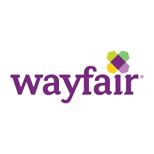
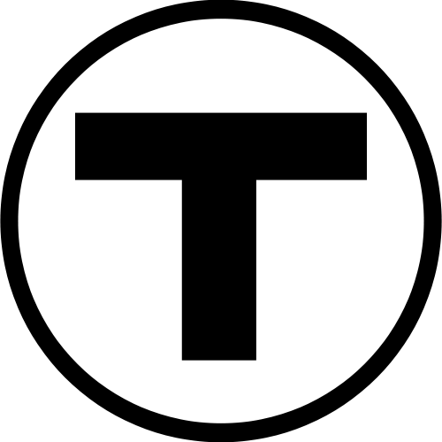
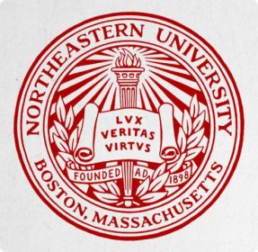
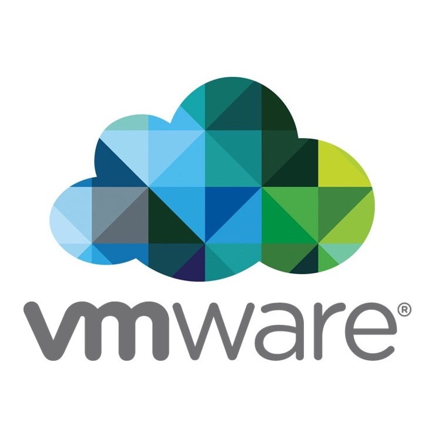
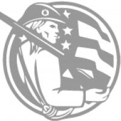
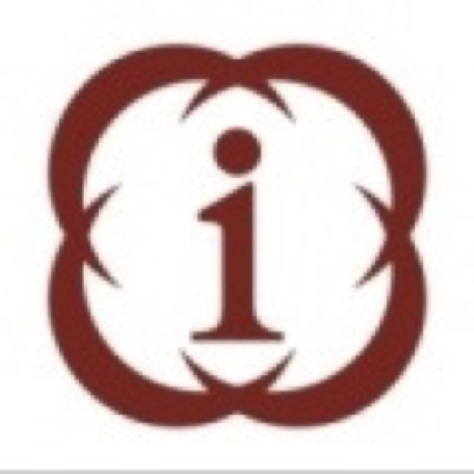

Experience
-

Sept 2019 - Present
Wayfair, MA, USA
Software Engineer 2 & Team Lead- I am currently working on Search platform team where my job is to make the service highly available and scalable for the search user base(internal/external) - I actively Actively develop on Java codebase while leading , planning, mentoring and unblocking 3 teammates. - I lead & actively developed to scale our infrastructure by splitting traffic to clusters while migrating to Apache Solr 7 which has increased platform stability and response times have dropped by 40% while allowing flexibility to manage resources and reduce infrastructure cost by 30%. - I have learned and changed 3 applications to use docker and Kubernetes with horizontal pod autoscaling this reduced production incidents from 1/month to 0, also optimized resources utilization reduced GCP infrastructure cost by 50% - I have performed load testing for capacity planning of new REST API in k8s using jmeter and kafka replay and mirror. - I am currently leading an effort to develop and integrate a REST API layer for search as a service (Java) which is search framework agnostic, while working with a cross-team collaboration effort within the company.
-

Feb 2017 - Aug 2019
Toast.inc, MA, USA
Software Engineer- Designed and developed a new pipeline to run spark jobs for Toast’s first data analytics platform resulting in 90% improvement in time for reports processing. - Developed a Java microservice to send jobs to spark, built customized Jenkins pipelines to build/deploy artifacts to the EC2 containers for the service and added functionality to prioritize spark jobs using a job queue. - Improved jacoco test code coverage from 33% to 50% code by adding unit tests and integration tests. Also audited and reduced time to run E2E automated selenium tests. - Improved monitoring using Datadog and New Relic for better visibility into live systems vitals along with proactive alerting for spark and microservices. - Worked on 2 different areas of product including analytics and labor-cash-payroll management - Mentored 5 interns in 2 years while managing day to day tasks.
-

June 2016 - Sept 2016
Massachusetts Bay Transportation Authority, MA, USA
Business Analyst Intern- Current state documentation of Benefits, Training, HR using Visio workflows
- Worked on implementing best practices in Agile - Scrum, KanBan for team with Agile Trainer
- Agile - Scrum, KanBan
- Toolsmith for Trello, Slack, Asana -

Jan 2016 - May 2016
Northeastern University, MA, USA
CS5610- Web development
Graduate Teaching Assistant- Helped with redesigning the course work
- hosted TA sessions for problems solving on MEAN stack development
- Graded assignments and projects -

May 2015 - Dec 2015
VMware.inc, Cambridge, MA, USA
Site Recovery Management Intern- Designed a new topology “Availability zone” to ensure multiple availability products of VMware can support the disaster recovery of the same VM.
- Implemented this topology in Site Recovery Management 6.0 codebase as a proof of concept.
- Won VMware Cambridge Poster Session Winner for Availability Zone
- VMware Intern Prodigy for Northeastern University -

May 2015 - Sep 2015
Code for Boston, MA, USA
Web developer- Volunteered for designing and implementing a map based secure dashboard Cornerwise - Features developed to keep people updated about the zoning changes in MA - Technologies : HTML5, Bootstrap, backbone.js, leaflet
-

Jun 2011 - Jul 2014
NSE Infotech Services LTD, Mumbai, India
Associate System Analyst- Designed and developed 3 projects for Parallel Risk Management System Team and awarded 2 recognitions
- Mentored 3 campus recruits to help in learning the domain knowledge and technologies used in projects
- Implemented risk management system for weekly expiry contracts using message passing interface in C and Oracle 10g
- Optimized current system to get 50% increase in computing efficiency and 30% higher trade processing rate with MPICH2 and C.